全部原始行保留于 metrics_all_rows.csv。图中区间为描述分位数，不代表统计置信度。All rows remain available; quantiles are descriptive. Manifest
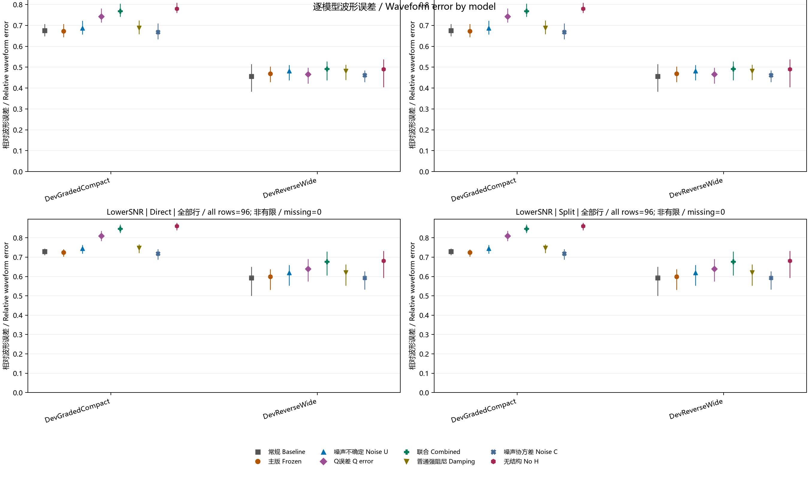
Four panels compare every method for each model in Main and LowerSNR, separately for Direct and Split. Points are finite-row means, vertical lines span the empirical 10th–90th percentiles. Numerical failures with finite scores remain included; nonfinite counts are explicit.
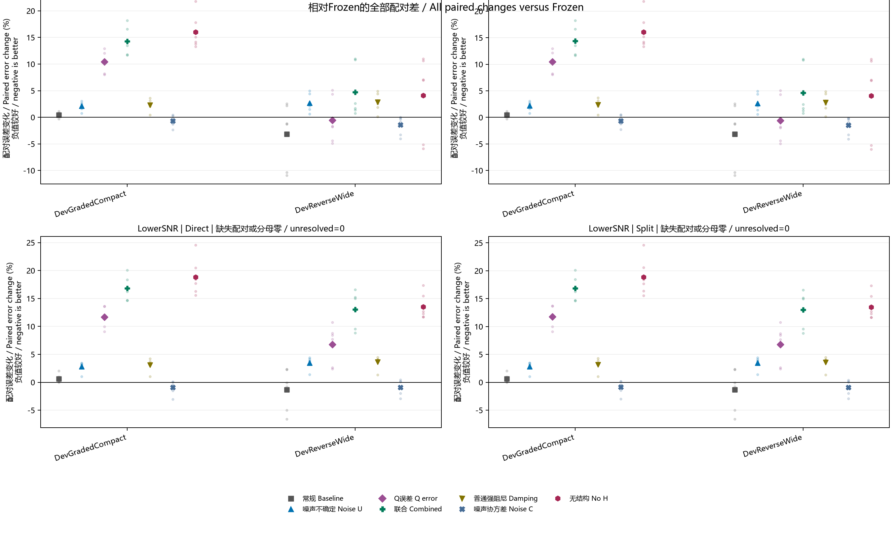
Individual paired percentage changes are shown as faint points and each model mean as a larger symbol. Zero means equality with the same-route Frozen. Every paired finite score is included, with unresolved counts disclosed.
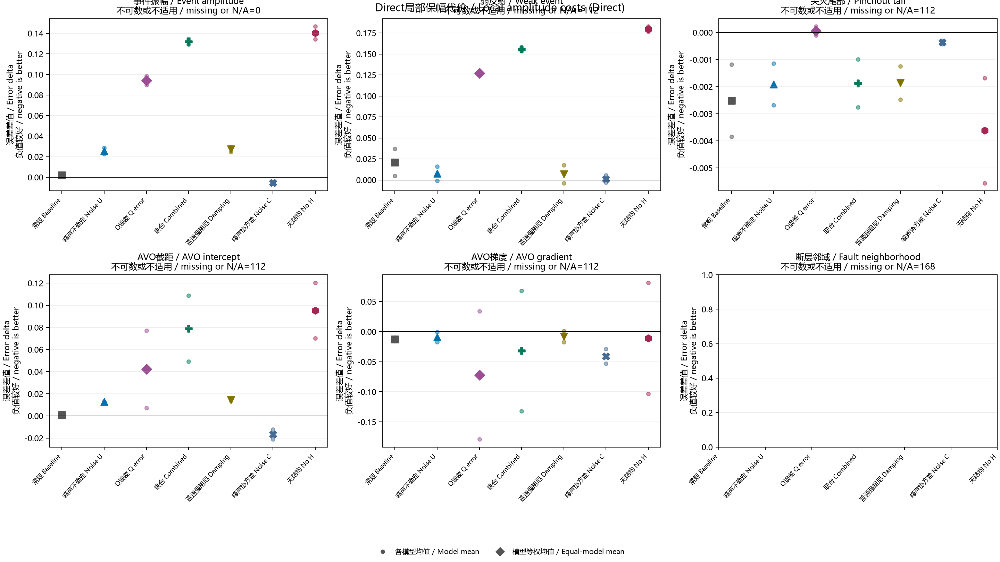
Six panels display paired absolute changes in event amplitude, weak-event, pinchout-tail, AVO intercept, AVO gradient and fault-neighborhood errors. Small circles show model means, larger method symbols show the equal-model average. Missing and inapplicable entries are counted together and retained in source data.
Six panels display paired absolute changes in event amplitude, weak-event, pinchout-tail, AVO intercept, AVO gradient and fault-neighborhood errors. Small circles show model means, larger method symbols show the equal-model average. Missing and inapplicable entries are counted together and retained in source data.
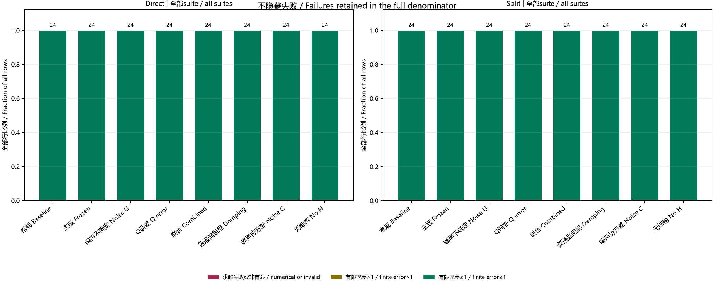
Two stacked bar charts classify every row from every suite as numerical/invalid, a valid waveform error above one, or a valid error at most one. Numbers above bars give all-row denominators; nonfinite errors remain in the invalid category.
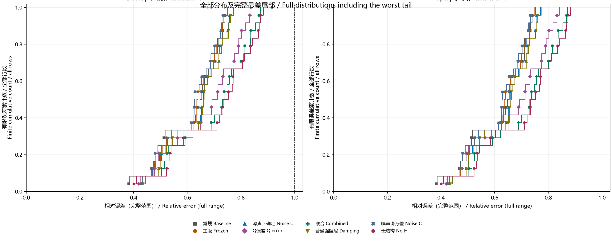
Empirical cumulative curves include every finite RelativeError, regardless of solver status, across all suites. Their denominator includes nonfinite rows, so an incomplete curve can end below one. The full observed error range is shown and the error=1 threshold is marked.
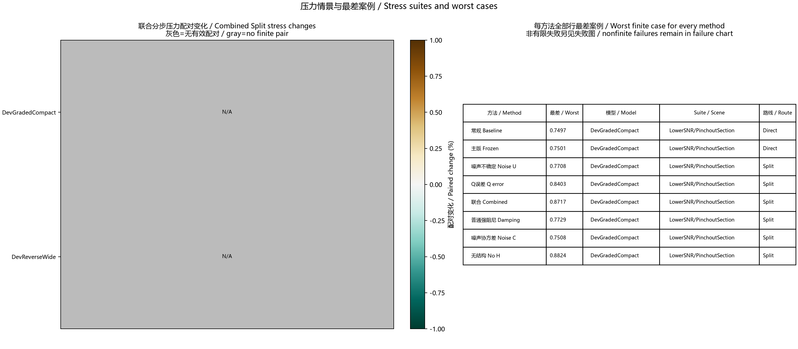
The left heatmap contains mean paired percentage changes for Combined Split versus Frozen Split in every stress suite and model, with symmetric full-range colors and gray missing cells. The right table names the worst finite error for every method across all rows and routes. Nonfinite failures are reported separately rather than omitted from the study.
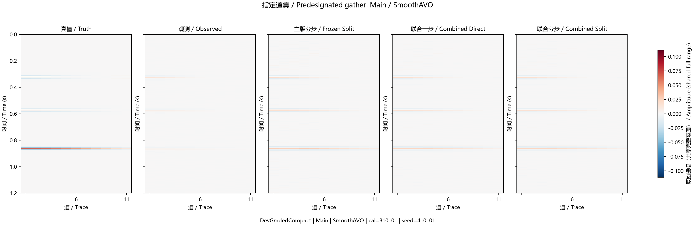
Five same-gather panels show truth, observation, Frozen Split and Combined Direct/Split for the predesignated first model/calibration/observation. Every panel uses the same symmetric amplitude range, set by the largest absolute value across all shown arrays, so no sample is clipped.
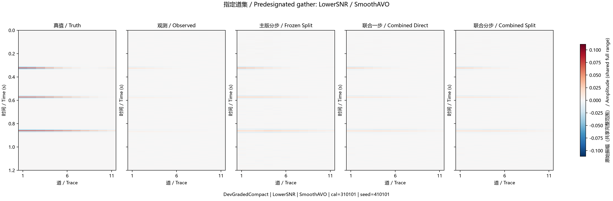
Five same-gather panels show truth, observation, Frozen Split and Combined Direct/Split for the predesignated first model/calibration/observation. Every panel uses the same symmetric amplitude range, set by the largest absolute value across all shown arrays, so no sample is clipped.
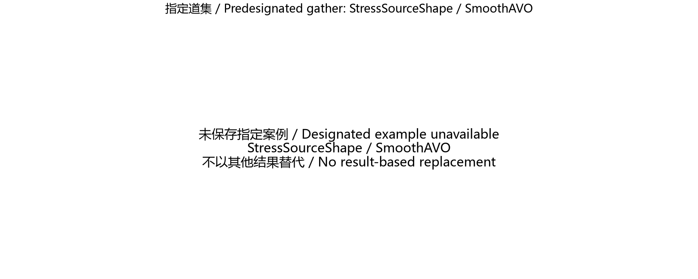
The predesignated example was not saved. This placeholder records the missing artifact without selecting an alternative result.
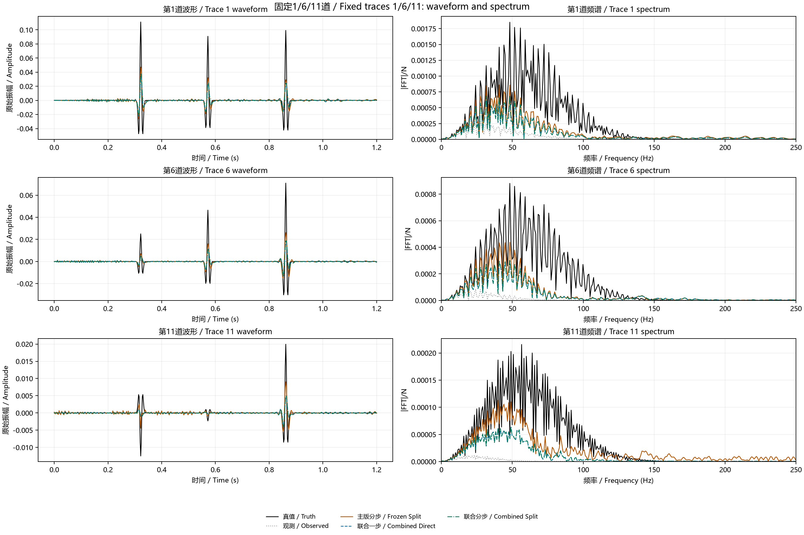
Three fixed traces, 1, 6 and 11, are shown with their full time waveforms and unsmoothed Fourier magnitudes over the full Nyquist range. Truth, observed data, Frozen Split and both Combined routes retain raw amplitude scaling and distinct line styles.
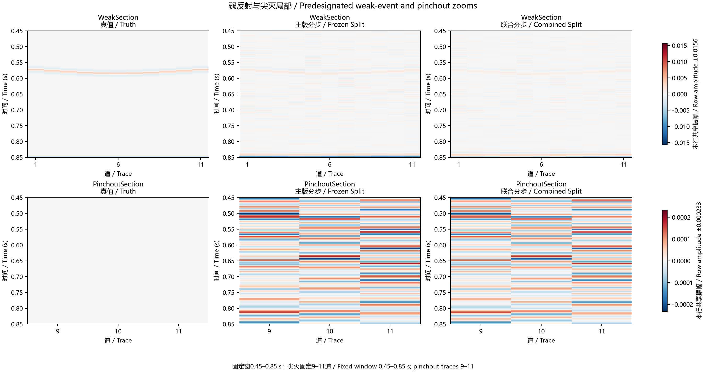
Two rows compare truth, Frozen Split and Combined Split for the predesignated weak-event and pinchout examples. The time window is fixed at 0.45–0.85 seconds; pinchout uses fixed tail traces 9–11. Each row shares its full absolute amplitude maximum across shown methods, with no clipping.
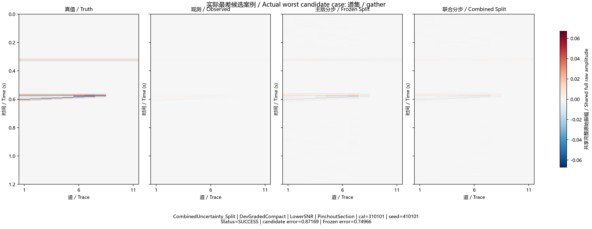
The actual largest finite RelativeError among the three declared candidate Split branches is shown beside its same-observation Frozen Split, truth and observation. Selection uses maximum error, including finite solver-failed results, with deterministic tie breaks; it does not choose an attractive example. The key, status and errors are printed. All panels share an unclipped absolute amplitude maximum.
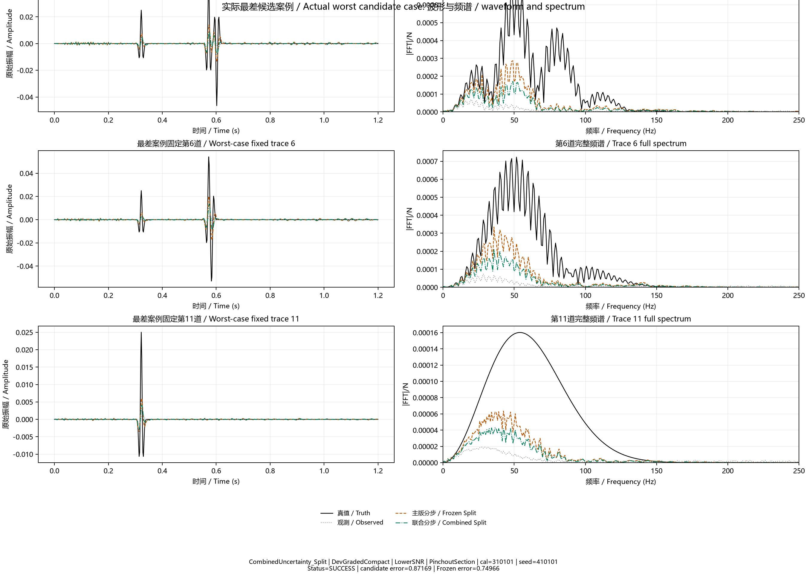
For the same actual worst finite candidate Split case, fixed traces 1, 6 and 11 show the full-time raw waveforms and unsmoothed full-Nyquist spectra of truth, observation, the candidate and its matched Frozen Split. The case identifiers, solver status and candidate/Frozen errors are printed. Trace choice is fixed rather than selected by the appearance of failure.